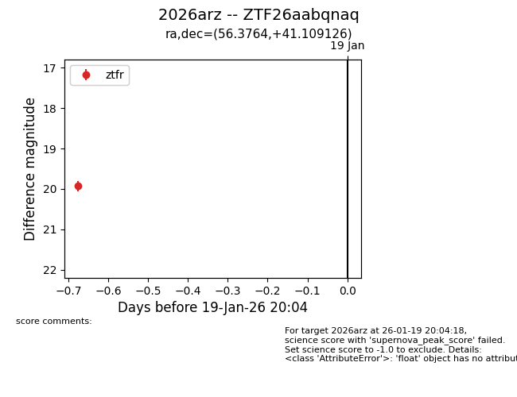
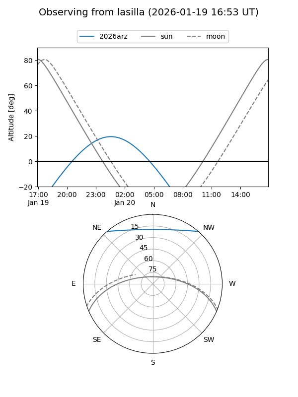
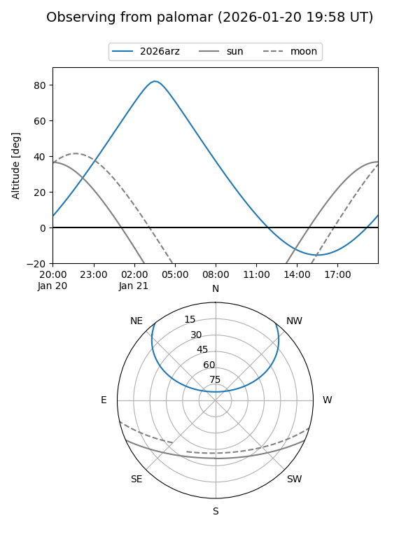

2026arz
Target 2026arz at 2026-01-21 04:31
Aliases and brokers:
FINK: link
Lasair: link
ALeRCE: link
TNS: link
YSE: link
alt names
ZTF26aabqnaq (ztf,fink_ztf)
2026arz (tns,yse)
Coordinates:
equatorial (ra, dec) = 56.3764,+41.10913
equatorial (HMS+DMS) = 03:45:30.33,+41:06:32.85
galactic (l, b) = (154.8071,-10.74687)
Flags:
Photometry:
last ztfr=19.93
1 ztfr detections
Lightcurve

Visibility


Additional plots